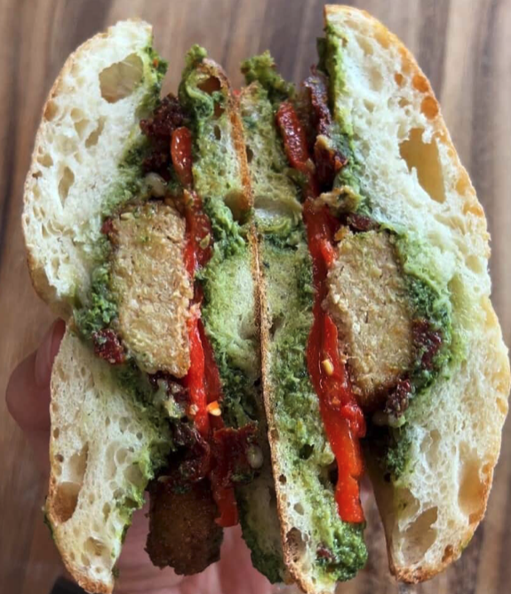
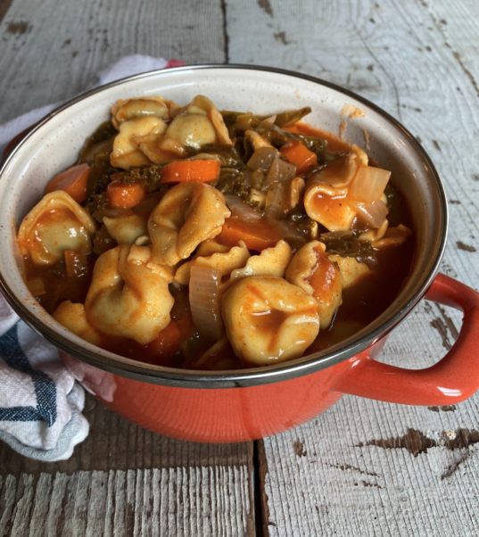
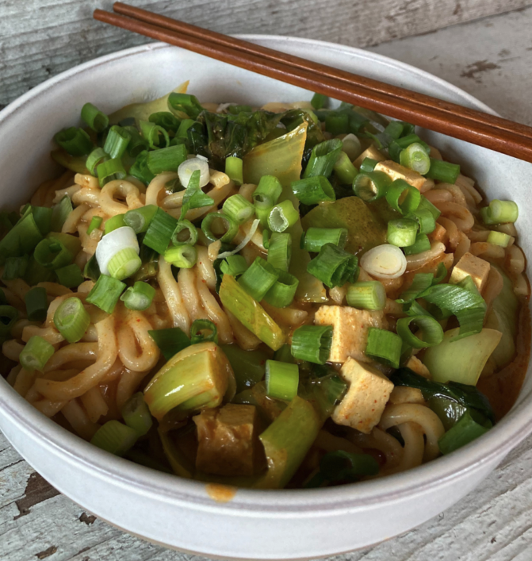

PIZZA

Saag Paneer Pizza

Naan Flatbread Veggie Pizza

4 ingredient Artichoke Pesto Flatbread Pizza

Calabrian Chili and Double Cheese Pizza
GRILLED SANDWICHES

Sweet&Spicy Pimento Grilled Cheese

Grilled Veggie Muenster Melt

Grilled Caprese on Cauliflower Crust

Grilled Kim-cheese

BBQ Jackfruit Sammich

Quinoa Cowboy Veggie Burgers

Ultimate Grilled Cheese

Vegan Chicken Pesto Sandwich
BREAKFAST

Soy Chorizo Breakfast Sandwich

Country Potatoes with Eggs

Vegan Breakfast Tacos

Vegan Banana Bread Waffles

Blueberry Protein Pancakes

Veggie Chickpea Hash

Hashbrown Breakfast Sandwich

Soy Chorizo Breakfast Tacos

Oats with Agave

Protein-packed Yogurt Parfait
MEXICAN

Beefless Burritos

Beefless Tacos

Dutch Oven Veggie Enchiladas

Black Bean and Cheese Taquitos

Squash Tacos

Ready-to-Eat Vegan Enchilada Casserole

Chipotle Veggie Quesadillas

Butternut Squash and Broccolini Rice Bowl with Soy Chorizo

Vegetarian Chili Nachos
PASTA

Fusili Veggie Soup

Ready-to-Eat Vegan Italian Bolognese Ravioli

Spinach Artichoke Pasta

Gluten-free Mac and Cheese

30 minute Tortellini Soup

Pesto Cauliflower Gnocchi

Pesto Ravioli
ASIAN

Truffley Cauliflower Stir Fry

Ready-to-Eat Kimbap

Ready-to-Eat Vegan Poke

Ready-to-Eat Chickenless Mandarin Orange Morsels

Ready-to-Eat Korean Beefless Bulgogi

Ready-to-Eat Veggie Pad Thai

Ready-to-Eat Thai Veggie Gyoza

Ready-to-Eat Veggie Spring Rolls

Korean-inspired Cold Noodles

Stir-Fried Rice Cakes

Veggie Biryani Burritos

Ready-made Veggie Biryani with Dumplings

Fridge Foraged Fried Rice

Ready-Made Fried Rice

Channa Masala Tomato Soup

Tteokbokki (add egg for protein)

Yellow Tadka Dal

Veggie Samosas

Tikka Masala Lentils

Chili Onion Cabbage Noodles

Red Curry Udon Noodle Bowl
Veggie Ramen

Veggie Fried Rice with Gyoza
MIDDLE EASTERN

Falafel Waffle

Harvest Pilaf

Falafel Sandwiches

Farro Grain Bowl

Spicy Buffalo Cauliflower Bowls with Avocado and Green Tahini

Veggie Falafel on Pita